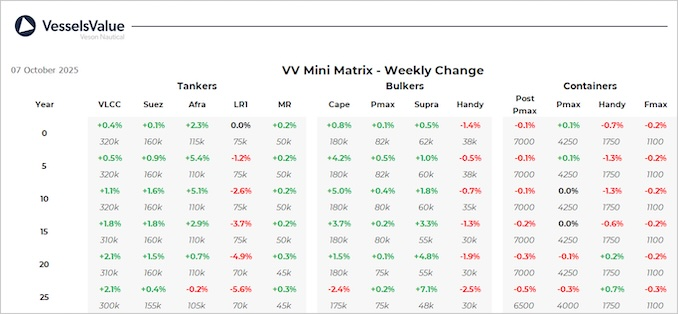

Bulkers:VV Bulker values have mostly increased this week. With mid aged Capesize, Panamaxes and olderSupramax vessels all seeing an increase due to sales such as Mineral Cloudbreak
Capesize BC Wakayama Maru (181,500 DWT, Mar 2013, Koyo Dock) sold SS/DD passed to Asyad Shipping for USD 36.8 mil, VV Value USD 36.17 mil
Panamax BC Nord Taurus (81,700 DWT, Nov 2016, Imabari) sold to Nord Taurus for USD 27.5 mil, VV Value USD 26.47 mil
Ultramax BC Ultra Colonsay (61,500 DWT, Oct 2011, Shin Kasado Dock) sold to Unknown Asian buyers for USD 18.1 mil, VV Value USD 17.48 mil
Handy BC CH Doris & CH Bella (33,100 DWT, 2010, Zhejiang Zhenghe Shipbuilding) sold DD Due in an en bloc deal to undisclosed buyers for USD 16.4 mil, VV Value USD 16.19 mil
Tankers:S&P activity remains high across many of the tanker sectors, with values for most sectors on the rise.
4 x Resale VLCC’s (306,000 DWT, 2026, Hengli Shipbuilding) sold to Dynacom Tankers for USD 118 mil, VV Value USD 118.3 mil
4 x Resale VLCC’s (306,000 DWT, 2026/27, Hengli Shipbuilding) sold to Seatankers Management for USD 118 mil, VV Value USD 120 mil
Suezmax Advantage Summer (156,500 DWT, Jun 2010, Jiangsu Rongsheng) sold to undisclosed buyers for USD 38 mil, VV Value USD 37.5 mil
LR2’s STI Lobelia and STI Lavender (110,000 DWT, Jan/Feb 2019, New Times Shipbuilding) sold to Noatum Maritime for USD 122.4 mil each, VV Value USD 120.08 mil
LR2 Yinghao Confidence (107,600 DWT, Mar 2010, Tadotsu Tsuneishi) sold to Flynn Ventures for USD 36 mil, VV Value USD 35.08 mil
LR1 GH Madison (74,600 DWT, Oct 2010, Hyundai Mipo) sold to Ultratank for USD 21.5 mil, VV Value USD 22.7 mil
Containers:Second-hand values remain stable this week, the only notable change being in modern Handy and Sub Panamax Containers.
Handy Container CNC Jupiter (1,952 TEU, Aug 2020, Tsuneishi Cebu) sold to CMA CGM for USD 36 mil, VV Value USD 37.4 mil.
Feedermax SC Potomac (706 TEU, Jun 2002, Sedef) sold for USD 9.2 mil, VV Value USD 8.6 mil
